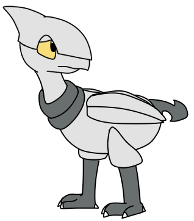

|
Hunter is a member of Almia's Ranger Guild and Cardinal's partner. He grew up in a wealthy Kalosian family and attended the Ranger School of his own will. He is fluent in Kalosian.
|
Hunter
|
|

Design as of November 2019
Pokémon: Skarmory
Parents: Skarmory(F) + Staraptor(M)
|
|
Appearance
Hunter has a bulkier body and head compared to a Skarmory's usually thin and narrow build, which is likely inherited from his Staraptor father. His collar and other dark areas are also more gray than blue.
|
Useless Trivia
-
As a result of some rough times in Oblivia, Hunter frequently gets paralyzingly anxious when in dark, enclosed spaces, and when left alone.
-
Sometimes he rattles off in Kalosian when he's nervous. Other times he does it because he knows Cardinal can't understand him.
|